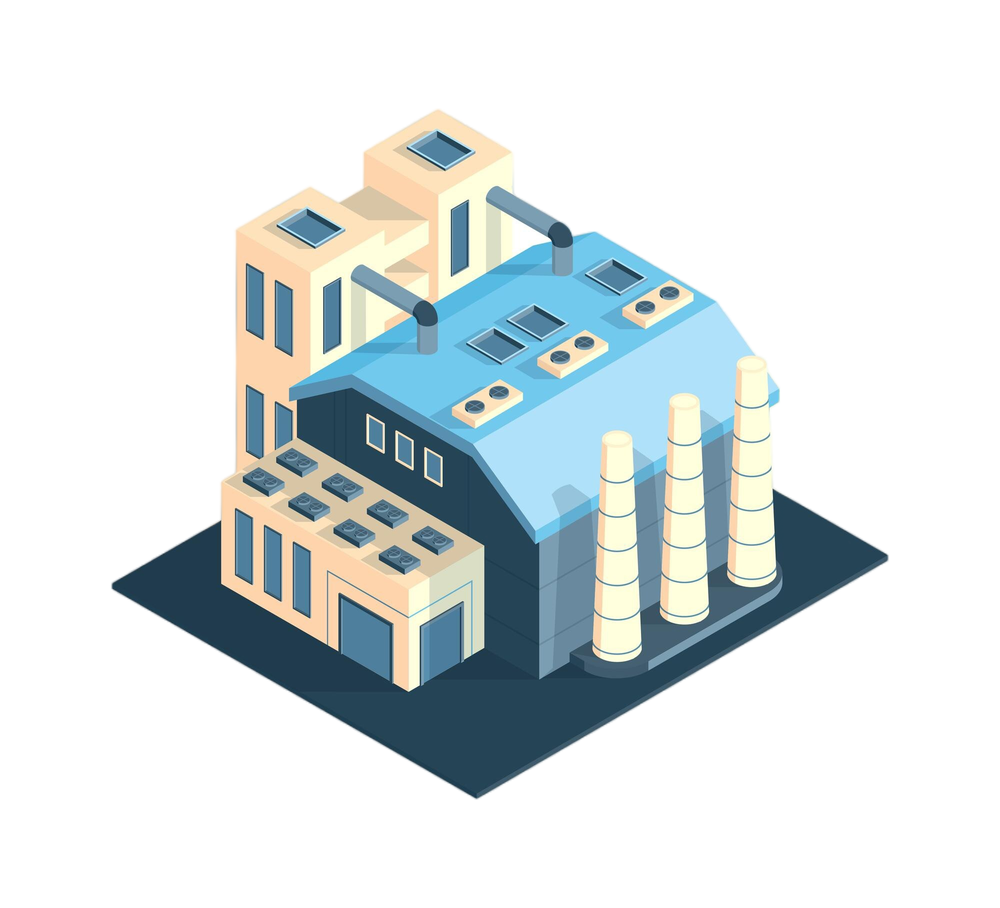

Nós fazemos uma coleta de resíduos orgânicos de cada residência, que serão encaminhados para uma estação de compostagem comunitária, onde serão transformados em solo nutritivo.
Uma parte dos resíduos será processada em um digestor anaeróbico para produzir biogás, que será utilizado para gerar eletricidade e calor que iremos comercializar para empresas de energia elétrica e indústrias.
Serão produzidos a partir dos resíduos sólidos resultantes do processo de digestão anaeróbica e podem ser utilizados como fertilizantes de alta qualidade por agricultores e empresas de jardinagem. Essas iniciativas não apenas promovem a sustentabilidade ambiental, mas também oferecem benefícios econômicos para a comunidade.
Ao transformar os resíduos em recursos úteis, como solo nutritivo e biogás, o projeto promove a economia circular e a utilização eficiente de recursos. Isso não apenas reduz o desperdício, mas também cria oportunidades econômicas. Em resumo, a relevância deste projeto reside em sua abordagem holística para lidar com os resíduos orgânicos, promovendo sustentabilidade ambiental, benefícios econômicos e conscientização comunitária.